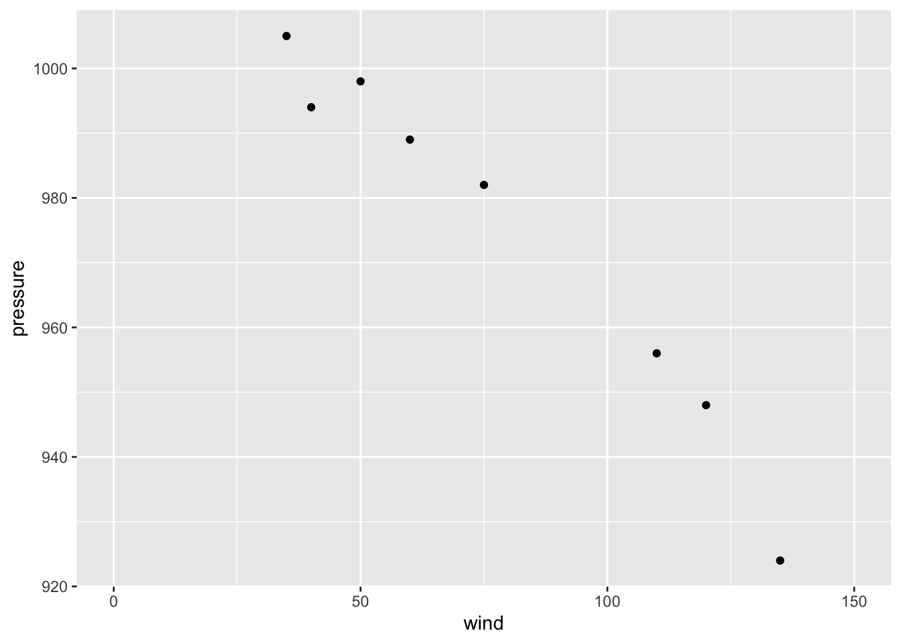

4 "dplyr" and "ggplot2"
As previously said, our main focus will be around what I consider to be the
two major tools from tidyverse: the packages "dplyr" and "ggplot2".
In turn, the main subject of this text has to do with analyzing tropical
cyclones.
Before we get our hands dirty analyzing the storms data set, as well as
other external data sets, I want to give you a crash introduction to some of
the fundamental ideas behind tidyverse. Likewise, I want to quickly review
a handful of functions. The idea is to have a stepping stone that we can use
to further explore the fascinating data of storms.
4.1 Sample Data
For illustration purposes, I would like to begin with a small data set. To be more specific, let’s consider data for a set of tropical cyclones that formed during the month of September 2010 in the North Atlantic. If you ask me why I’m choosing this particular set of storms, here are three random fun facts: 1) September tends to be the most active month for the formation of tropical cyclones in the North Atlantic; 2) 2010 was the year I moved to the USA, and 3) Sep-2010 turned out to have a storm named Gaston 😉.
# A tibble: 8 × 4
name wind pressure category
<chr> <dbl> <dbl> <chr>
1 Gaston 35 1005 ts
2 Hermine 60 989 ts
3 Igor 135 924 cat4
4 Julia 120 948 cat4
5 Karl 110 956 cat3
6 Lisa 75 982 cat1
7 Matthew 50 998 ts
8 Nicole 40 994 ts As you can tell, the data is in tabular format organized into four columns and eight rows. Each row corresponds to a single storm, in turn, the columns are:
nameis the name given to the storm,windcorresponds to the maximum wind speed (in knots) reached by the storm,pressurehas to do with the minimum pressure (in millibars) reached by the storm,categoryindicates the category:tsstands for tropical stormcat1is a category-1 hurricanecat3is a category-3 hurricanecat4is a category-4 hurricane
The way this data is handled in R is with a tibble object. This class of
object provides the rectangular structure to store tables in tidyverse, and it
is central to this ecosystem.
Recall that tibbles are printed in a very peculiar form:
the number of rows that are displayed is limited to 10;
depending on the width of the printing space, you will only see a few columns shown to fit such width,
underneath the name of each column there is a three letter abbreviation inside angle brackets,
this abbreviation indicates the data type used by R to store the values:
<chr>stands for character data<dbl>means double (i.e. real numbers or numbers with decimal digits)
Here’s the command I’ve used to create this tibble:
sep2010 <- tibble(
name = c('Gaston', 'Hermine', 'Igor', 'Julia', 'Karl', 'Lisa', 'Matthew', 'Nicole'),
wind = c(35, 60, 135, 120, 110, 75, 50, 40),
pressure = c(1005, 989, 924, 948, 956, 982, 998, 994),
category = c('ts', 'ts', 'cat4', 'cat4', 'cat3', 'cat1', 'ts', 'ts')
)To create a tibble you use the tibble() function. One option to organize
the content is by passing individual vectors (one vector per column) separated
by commas.
4.2 Basics of "ggplot2"
With the sep2010 data, we may be interested in obtaining a graphic like the
following scatter plot:

4.2.1 Some Terminology
Before I show you how to produce the above scatter plot, it’s important to
introduce some of the key terminology used in "ggplot2":
The starting point is the data that we want to visualize. The convention is to have data in a table object (e.g.Â
data.frame,tibble) in which variables are stored as columns.Then we have so-called geoms, short for geometric objects; these are basically things such as bars, lines, points, polygons, and other kind of marks that are drawn to represent the data.
Geoms have visual properties, formally known as aesthetic attributes, and colloquially referred to as aesthetics; these are things such as \(x\) and \(y\) positions, line color, fill color, point shapes, etc.
The use of a variable to encode a visual property of a geom is called a mapping.
Scales control the mapping from the values in the data space to values in the aesthetic space. A continuous \(y\) scale maps larger numerical values to vertically higher positions in space.
Guides show the viewer how to map the visual properties back to the data space. The most commonly used guides are the tick marks and labels on an axis.
In a data graphic, there is a mapping (or correspondence) from properties of the data to visual properties in the graphic. The data properties are typically numerical or categorical values, while the visual properties include the \(x\) and \(y\) positions of points, colors of lines, height of bars, and so on.
On the surface, representing a number with an \(x\) coordinate may seem very different from representing a number with a color of a point, but at an abstract level, they are the same.
In the grammar of graphics, this deep similarity is not just recognized, but made central.
4.3 Basic Scatterplot
A basic ggplot() specification looks like this:
ggplot(data = sep2010, aes(x = wind, y = pressure))This creates a ggplot object using the data frame econ_chem. It also
specifies default aesthetic mappings within aes():
x = windmaps the columnwindto the \(x\) positiony = pressuremaps the columnpressureto the \(y\) position
"ggplot2" has a simple requirement for data structures: they must be stored
in data frames or tibbles, and each type of variable that is mapped to an
aesthetic must be stored in its own column.
After we’ve given ggplot() the data frame and the aesthetic mappings, there’s
one more critical component. We need to tell it what geometric objects to
put there. At this point, "ggplot2" doesn’t know if we want bars, lines, points,
or something else to be drawn on the graph.
We’ll add geom_point() to draw points, resulting in a scatter plot:
ggplot(data = sep2010, aes(x = wind, y = pressure)) +
geom_point()
4.3.1 Storing a ggplot object
If you are going to reuse some of these components, you can store them in
variables. We can save the ggplot object in an object called gg, and then
add geom_point() to it.
gg = ggplot(sep2010, aes(x = wind, y = pressure))
gg + geom_point()4.3.2 More Mappings
We can also map the variable category to the color of the points, by
putting aes() inside the call to geom_point(), and specifying
color = category
gg + geom_point(aes(color = category))
This doesn’t alter the default aesthetic mappings that we defined previously,
inside of ggplot(...). What it does is add an aesthetic mapping for this
particular geom, geom_point(). If we added other geoms, this mapping would
not apply to them.
4.3.3 Setting Values
Contrast this aesthetic mapping with aesthetic setting. This time, we
won’t use aes(); we’ll just set the value of color directly to "red".
And we’ll also increase the size of the dots by setting size:
gg + geom_point(color = "red", size = 3)
4.3.4 Customizing Scales
We can also modify the scales; that is, the mappings from data to visual
attributes. Here, we’ll change the \(x\) scale so that it has a larger range:
gg + geom_point() + scale_x_continuous(limits = c(0, 150))
If we go back to the example with the color = category mapping, we can also
modify the color scale and customize them with our own values:
gg +
geom_point(aes(color = category), size = 2) +
scale_color_manual(values = c("blue", "magenta", "red", "cyan"))
4.3.5 Themes, Annotations, etc
Some aspects of a graph’s appearance fall outside the scope of the grammar of
graphics. These include the color of the background and grid lines in the
graphing area, the fonts used in the axis labels, annotations, text in the
graph title & subtitle, legend details, and things like that. These are
controlled with auxiliary functions such as labs(), theme(), or annotate().
gg +
geom_point(aes(color = category), size = 3) +
geom_text(aes(label = name), hjust = 0, nudge_x = 2, size = 3) +
scale_x_continuous(limits = c(0, 150)) +
scale_y_continuous(limits = c(900, 1010)) +
labs(title = "Storms in North Atlantic formed during Sep-2010",
subtitle = "Negative association between wind and pressure",
x = "Maximum Wind Speed (kn)",
y = "Minimum Pressure (mbar)") +
annotate(geom = "text", x = 26, y = 1005, label = "hey!", color = "purple") +
theme_minimal() +
theme(legend.position = "bottom")
4.4 Basic "dplyr" verbs
In no particular order of importance, let’s start with the set of elementary
"dplyr" functions known as the basic dplyr verbs:
filter(): select (i.e. keeping) rows that match a conditionslice(): subset rows using their positionsselect(): keep or drop columns using their names and typesmutate(): modify existing variables, or add new variablesarrange(): reorder rows using column namessummarise(): reduce variables to valuesgroup_by(): grouped (aggregated) operations
4.4.1 Filter
filter() allows you to select rows by defining a condition (which could be
simple or compound). For example, we can filter storms by selecting those
rows from year 1975
# using a single condition
storms75 <- filter(storms, year == 1975)We can also use a compound logical condition:
amy75 <- filter(storms, year == 1975 & name == "Amy")
amy75## # A tibble: 31 × 13
## name year month day hour lat long status category wind pressure
## <chr> <dbl> <dbl> <int> <dbl> <dbl> <dbl> <fct> <dbl> <int> <int>
## 1 Amy 1975 6 27 0 27.5 -79 tropical d… NA 25 1013
## 2 Amy 1975 6 27 6 28.5 -79 tropical d… NA 25 1013
## 3 Amy 1975 6 27 12 29.5 -79 tropical d… NA 25 1013
## 4 Amy 1975 6 27 18 30.5 -79 tropical d… NA 25 1013
## 5 Amy 1975 6 28 0 31.5 -78.8 tropical d… NA 25 1012
## 6 Amy 1975 6 28 6 32.4 -78.7 tropical d… NA 25 1012
## 7 Amy 1975 6 28 12 33.3 -78 tropical d… NA 25 1011
## 8 Amy 1975 6 28 18 34 -77 tropical d… NA 30 1006
## 9 Amy 1975 6 29 0 34.4 -75.8 tropical s… NA 35 1004
## 10 Amy 1975 6 29 6 34 -74.8 tropical s… NA 40 1002
## # ℹ 21 more rows
## # ℹ 2 more variables: tropicalstorm_force_diameter <int>,
## # hurricane_force_diameter <int>4.4.2 Slice
slice() allows you to subset rows using their positions, for example:
# first row
slice(amy75, 1)
# third row
slice(amy75, 3)
# first three rows
three_rows = slice(amy75, 1:3)
three_rows
# specify a negative position
slice(amy75, -1)We should note that slice() comes with a set of sibling functions such as:
slice_head()to subset the first rowsslice_tail()to subset the last rowsslice_min()to subset rows with lowest values of a variableslice_max()to subset rows with highest values of a variableslice_sample()to randomly subset rows
4.4.3 Select
select() allows you to select one or more columns by name:
select(amy75, day, month, wind, pressure)## # A tibble: 31 × 4
## day month wind pressure
## <int> <dbl> <int> <int>
## 1 27 6 25 1013
## 2 27 6 25 1013
## 3 27 6 25 1013
## 4 27 6 25 1013
## 5 28 6 25 1012
## 6 28 6 25 1012
## 7 28 6 25 1011
## 8 28 6 30 1006
## 9 29 6 35 1004
## 10 29 6 40 1002
## # ℹ 21 more rowsselect() also allows you to specify a range of consecutive columns via the : operator
# consecutive columns
select(amy75, name:long)## # A tibble: 31 × 7
## name year month day hour lat long
## <chr> <dbl> <dbl> <int> <dbl> <dbl> <dbl>
## 1 Amy 1975 6 27 0 27.5 -79
## 2 Amy 1975 6 27 6 28.5 -79
## 3 Amy 1975 6 27 12 29.5 -79
## 4 Amy 1975 6 27 18 30.5 -79
## 5 Amy 1975 6 28 0 31.5 -78.8
## 6 Amy 1975 6 28 6 32.4 -78.7
## 7 Amy 1975 6 28 12 33.3 -78
## 8 Amy 1975 6 28 18 34 -77
## 9 Amy 1975 6 29 0 34.4 -75.8
## 10 Amy 1975 6 29 6 34 -74.8
## # ℹ 21 more rowsselect() also allows you to exclude one or more columns by negating their
names:
# exclude columns by name
select(amy75, -(lat:hurricane_force_diameter))## # A tibble: 31 × 5
## name year month day hour
## <chr> <dbl> <dbl> <int> <dbl>
## 1 Amy 1975 6 27 0
## 2 Amy 1975 6 27 6
## 3 Amy 1975 6 27 12
## 4 Amy 1975 6 27 18
## 5 Amy 1975 6 28 0
## 6 Amy 1975 6 28 6
## 7 Amy 1975 6 28 12
## 8 Amy 1975 6 28 18
## 9 Amy 1975 6 29 0
## 10 Amy 1975 6 29 6
## # ℹ 21 more rowsInterestingly, you can also select() columns by their position
# columns by position
select(amy75, 1:5)## # A tibble: 31 × 5
## name year month day hour
## <chr> <dbl> <dbl> <int> <dbl>
## 1 Amy 1975 6 27 0
## 2 Amy 1975 6 27 6
## 3 Amy 1975 6 27 12
## 4 Amy 1975 6 27 18
## 5 Amy 1975 6 28 0
## 6 Amy 1975 6 28 6
## 7 Amy 1975 6 28 12
## 8 Amy 1975 6 28 18
## 9 Amy 1975 6 29 0
## 10 Amy 1975 6 29 6
## # ℹ 21 more rows4.4.4 Mutate
Another basic verb is mutate() which allows you to: 1) transform existing
variables, but also 2) add new variables.
For illustration purposes, let’s create a subset of storm Amy by selecting
day, month, hour, and wind:
amy75_dat = select(amy75, day, month, hour, wind)
amy75_dat## # A tibble: 31 × 4
## day month hour wind
## <int> <dbl> <dbl> <int>
## 1 27 6 0 25
## 2 27 6 6 25
## 3 27 6 12 25
## 4 27 6 18 25
## 5 28 6 0 25
## 6 28 6 6 25
## 7 28 6 12 25
## 8 28 6 18 30
## 9 29 6 0 35
## 10 29 6 6 40
## # ℹ 21 more rowsWind speed values—column wind—are expressed in knots. But what if we are
interested in having wind speed expressed in miles per hour? Enter mutate().
Here is how to add a new column wind_mph (1 knot = 1.15078 mph)
mutate(amy75_dat, wind_mph = wind * 1.15078)## # A tibble: 31 × 5
## day month hour wind wind_mph
## <int> <dbl> <dbl> <int> <dbl>
## 1 27 6 0 25 28.8
## 2 27 6 6 25 28.8
## 3 27 6 12 25 28.8
## 4 27 6 18 25 28.8
## 5 28 6 0 25 28.8
## 6 28 6 6 25 28.8
## 7 28 6 12 25 28.8
## 8 28 6 18 30 34.5
## 9 29 6 0 35 40.3
## 10 29 6 6 40 46.0
## # ℹ 21 more rows